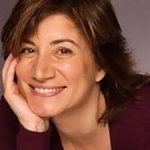
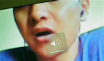

A week of dance and theater from Italy, Catalonia, Greece, Turkey, Lebanon and the US
September 8
Special event: Exploring the experience of refugees and migrants in the Mediterranean
On Tuesday Sept 8th Between the Seas, in partnership with the UNGUARDED Collective, will organize a series of events and open discussions dedicated to exploring the experience of migrants and refugees in the Mediterranean region and discussing methods of empowering their voice.
5pm: Stage Reading
In the Periphery by Sedef Ecer (Turkey/France)
Free event. Presented in English
The play tells the parallel stories of 2 generations of migrants, from the countryside to the periphery of the urban centers and from there to the European metropolis. The harsh reality of urbanization, illegal migration, the riots in the French suburbs, are intertwined with the comic relief of TV personas and gypsies, in this bitter-sweet play, " a festive and colourful painting, a bubble of tenderness in a dark reality" (Nicolas Arnstam)
7:30pm: Performance
In - Cite? by UNGUARDED collective (USA/Italy/Croatia/Greece)
N∙CITE? is a interdisciplinary performance developed by the UNGUARDED collective in collaboration with Mohammad Mirzay, a refugee, human rights advocate and member of the Afghani community in Athens, Greece. In this work, the collective focuses its exploration on the power of knowledge, the ability to communicate and the importance of empowering one's own voice. The UNGUARDED collective aims to raise public awareness about the personal and legal challenges, living in detention, day to day and/or homeless, that refugees experience in Greece and Southern Europe.
September 9
7pm: Dreams of the Mediterranean (Catalonia)
A multi disciplinary show combining sand art, live music, puppetry and speed painting. The illustrator, Borja González, works on a lit glass table top, sand-drawing onto the live music played by pianist Roc Sala. A camera records and projects the action on a big screen in real time so that we are able to follow the fascinating creative process of each drawing, which makes us travel to well-known corners of the world, natural environments which sing to the poetic nature of the human geography. Borja Gonzáles talent allows him to offer -in between his mesmerizing drawings- challenging acrobatics and he even manages to end the show very tenderly with the help of a life-size puppet.
September 10
7pm: Dreams of the Mediterranean (Catalonia)
9pm: The Dictator (Lebanon)
“A Masterpiece of claustrophobia, an exploration of despotism, delusion and power games” (Daily Star, Lebanon), The Dictator, written in 1969 by Issam Mahfouz, tells the story of a tyrant, a mentally disturbed individual under the illusion that he is humanity's long-awaited saviour. With the present turmoil in the Middle East in mind, the company revives this Lebanese classic of absurdism in a minimalist staging, in its new English translation by Robert Myers.
September 11
7pm: Hearts Beating Like Drums (Catalonia/France)
Acclaimed Catalan playwright Angels Aymar collaborates with NYC based actors for Hearts Beating Like Drums, a play built around women and war. 3 actresses embody different characters and their stories as victims of destruction, fight and fear. The scenes deal with the consequences of the disaster and the dysfunction which come from it.
9pm: A Palo Seco Flamenco/Rebeca Tomas
One of the festival's most popular performers, the fiery Flamenco dancer and choreographer Rebeca Tomas, returns to Between the Seas with her newest work.
September 12
2pm: The Dictator (Lebanon
6.30pm: Influx (USA/Lebanon) / Per...Inciso (Italy) (double bill)
Transition between cultures. Dance moves between. Masses crossing borders. Influx is the cross-cultural dance collaboration between Nadra Assaf (Lebanon) and Rain Ross (USA), with music composed by Martin Loyato (Argentina). Dancers from the USA and Lebanon perform with live musicians from Lebanon, showcasing narratives of community and exchange, of fluidity and discovery.
Italian songs of the 60s and 90s are the protagonist in Per...Inciso, a sparkling, entrertaining work by one of Italy's most up and coming companies. From Modugno to Sinatra, from De Andrè to Gaber, from Capossela to Jovanotti the 7 dancers bring together, using irony and humour, different generations with sometimes similar experiences and emotions.
The company uses its signature style of combining a variety of genres – hip hop, contemporary etc -- to reconcile-young and old, tradition and innovation with a new, personal, dramaturgical language, lightweight and profound at the same time.
9pm: Hearts Beatings Like Drums (Catalonia/France)
September 13
3pm: Stage Reading
Privatopia, by M. Eustathiades (Greece)
Free event. Presented in English. (Part of the Special Event: exploring the experience of migrants and refugees in the Mediterranean)
Written in 2013, in an absurdist style characteristic of the playwright's aesthetic, the play is centered around a gated community, the Ones Inside the Wall, feeling increasingly threatened by The Ones Outside the Wall, migrants and homeless people. Eustathiadis makes a grotesque commentary on the increasing fears of Europe's upper classes in the face of the 'other'.